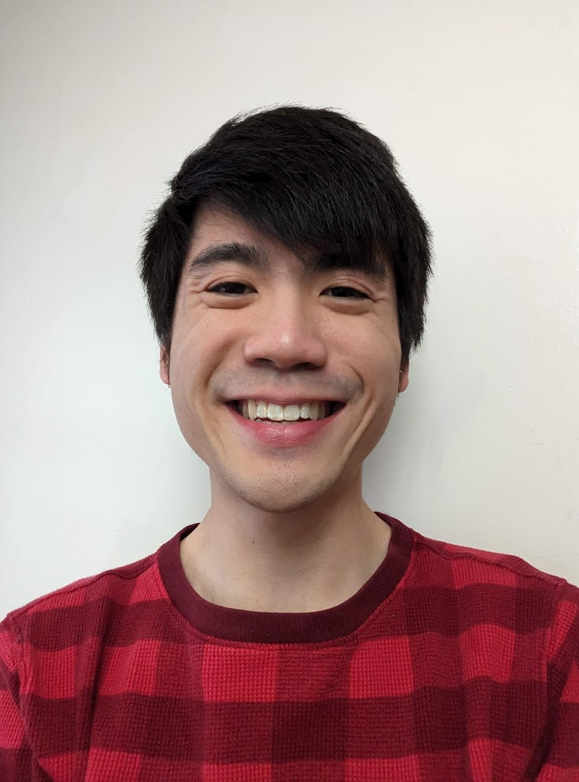

Hi, I'm Aidan!
- I'm a fourth year PhD student born in Virginia and studying at the University of Virginia.
- I'm happily studying Natural Language Processing advised by Prof. Yangfeng Ji.
- I'm grateful to be fully funded by the Dean's Scholar Fellowship (3 years) and the Distinguished Fellowship.
- I received my undergraduate degree from the University of Illinois at Urbana-Champaign Magna Cum Laude in Computer Science + Linguistics,
and my MCS at UVA.
- I'm currently working on the summarization of factchecks, and I have a strong interest in the interpretability of NLP models and applications of NLP for social good.
- In my freetime, I enjoy playing guitar, playing boardgames, and cooking.

Contact Info:
Email: aidan.w.sanPLEASEIGNORETHISPART@gmail.com
Twitter: @aidanwsan
Pronouns: he or they (no preference)
Research:
- Detecting concepts (ie. Addition, Arithmetic, Calculus) in
MOOC courses
- Concept Chunker - Uses IOB tagging to determine where multiword
concept phrases start and end
- LSTM neural network trained on textbook data
- Results on MOOC Lecture Dataset (Test): Accuracy: .933, F1: .62
- ACM DL, GitHub
- Dataset of more than 50k items for automatic extraction of product information from websites
- Wrote handcrafted rules to extract product attributes, then performed cleaning using crowdsourced annotations
- Evaluated dataset using a SOTA neural web extraction model
- arXiv
- 2 Stacked LSTMs which incorporate Emoji Embeddings and Sentiment Scores
- Rank 6/31 (F1 score) for subtask B (multitask)
- ACL Anthology, GitHub
Positions:
- CS1110 Instructor (Spring22) - Primary lecturer for one section of Intro to Programming
- Amazon Applied Science Intern (Summer21) - Designed a dataset to train neural web extraction models on the Alexa AI team
- Grail SWE Intern (Summer19) - Wrote Go code to allow switching of instruments during assays on the automation team
- Facebook SWE Intern (Summer18) - Wrote Python code to improve translation data quality on the Applied Machine Learning team
- TA for Discrete Math (Fall20), Natural Language Processing (Spring21), Data Structures (Fall17-Fall18)
- Space Chair of UVA CSGSG (Spring19-Fall21) - Managed budget for the CS lounge and organized events
- Cofounder of the UVA NLP Reading Group (Fall19-Spring20)
- Founder/Chair of ACM Special Interest Group for Natural Language Learning (Fall18-Spring19) - Developed course material about NLP topics